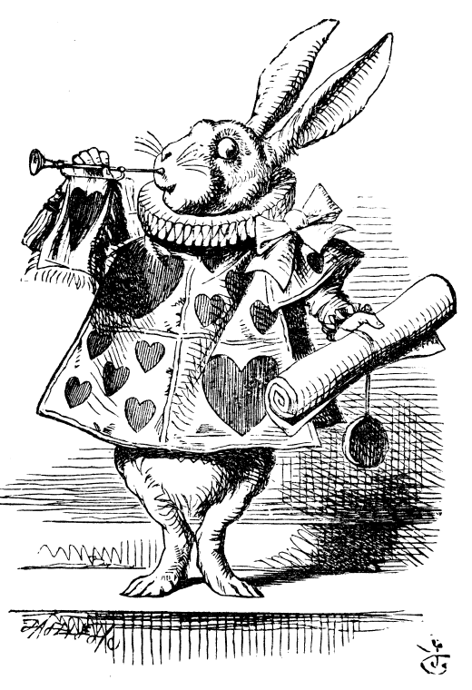

Alice, assise auprès de sa sœur sur le gazon, commençait à s’ennuyer de rester là à ne rien faire ; une ou deux fois elle avait jeté les yeux sur le livre que lisait sa sœur ; mais quoi ! pas d’images, pas de dialogues ! « La belle avance, » pensait Alice, « qu’un livre sans images, sans causeries ! »
Elle s’était mise à réfléchir, (tant bien que mal, car la chaleur du jour l’endormait et la rendait lourde,) se demandant si le plaisir de faire une couronne de marguerites valait bien la peine de se lever et de cueillir les fleurs, quand tout à coup un lapin blanc aux yeux roses passa près d’elle.

Il n’y avait rien là de bien étonnant, et Alice ne trouva même pas très-extraordinaire d’entendre parler le Lapin qui se disait : « Ah ! j’arriverai trop tard ! » (En y songeant après, il lui sembla bien qu’elle aurait dû s’en étonner, mais sur le moment cela lui avait paru tout naturel.) Cependant, quand le Lapin vint à tirer une montre de son gousset, la regarda, puis se prit à courir de plus belle, Alice sauta sur ses pieds, frappée de cette idée que jamais elle n’avait vu de lapin avec un gousset et une montre. Entraînée par la curiosité elle s’élança sur ses traces à travers le champ, et arriva tout juste à temps pour le voir disparaître dans un large trou au pied d’une haie.
Un instant après, Alice était à la poursuite du Lapin dans le terrier, sans songer comment elle en sortirait.
Pendant un bout de chemin le trou allait tout droit comme un tunnel, puis tout à coup il plongeait perpendiculairement d’une façon si brusque qu’Alice se sentit tomber comme dans un puits d’une grande profondeur, avant même d’avoir pensé à se retenir.
De deux choses l’une, ou le puits était vraiment bien profond, ou elle tombait bien doucement ; car elle eut tout le loisir, dans sa chute, de regarder autour d’elle et de se demander avec étonnement ce qu’elle allait devenir.